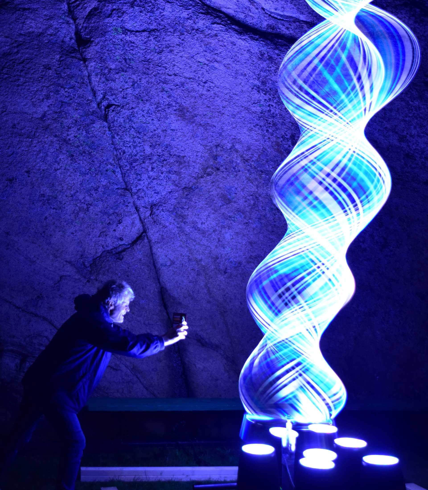
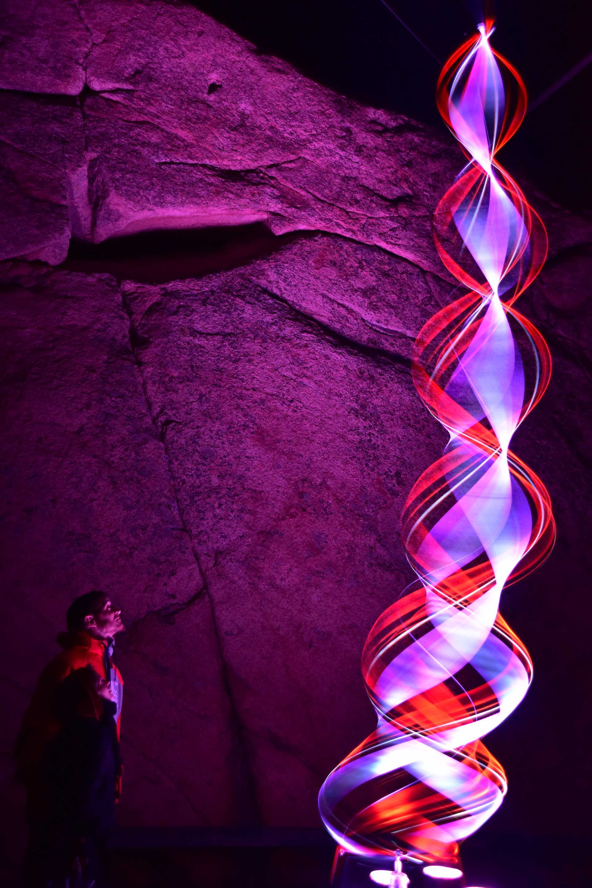
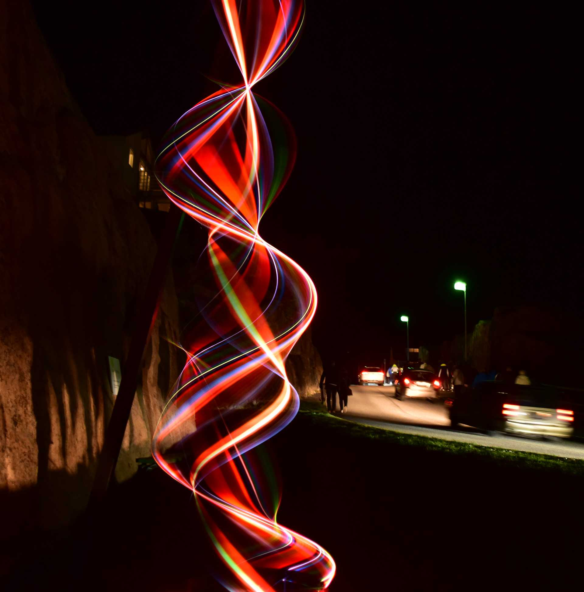
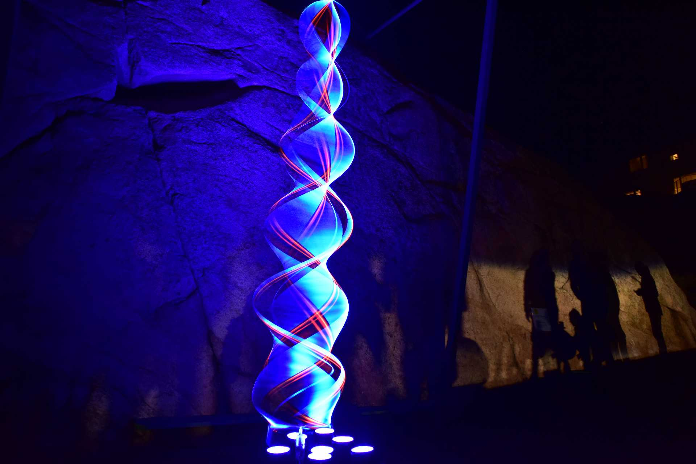
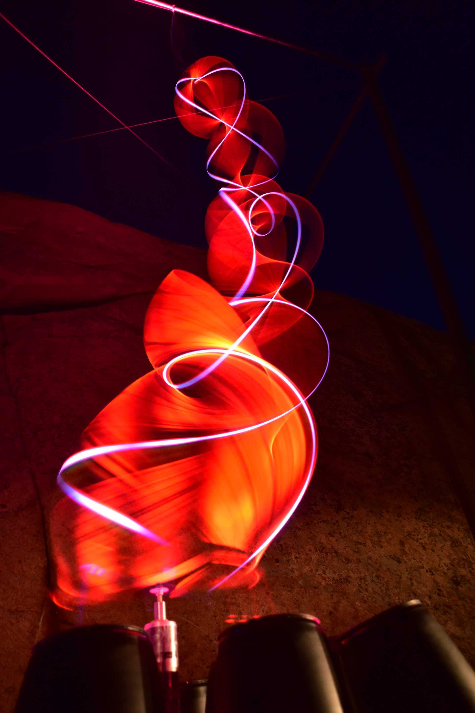

Island of Light 2018

A quiet island off the West coast of Sweden is hardly the sort of place to expect a light festival, yet this is where it happened, a place for nature lovers and fishermen, turned briefly to the first festival of light art. Island of Light , Smogen Sweden, 13 - 16 September 2018

The landscape is wild, windswept and rocky. The Spiral of light was cantilevered from a granite cliff. The weather was at times starry and beautiful, at other times we were thankful of the sheltering cliff shielding us from the full force of the wind, but when the rain came, it came pouring and all one could do was be like the Swedes, ever cheerful and well dressed for the night.

The headlights of passing cars threw elongated shadows on the cliff, adding to the unworldly atmosphere. At times it was quiet, at other times the crowds came. For the island it was a revelation, more people in a single night than had ever visited before, around 30,000 on the busiest night.

These photos are not time lapse photos; this is how it really looks to visitors. There are rare moments however where a photo surprises me. The one below was a happy accident. I am guessing a visitor used flash to take a shot at exactly the same moment I took my shot with no flash, so I have combined a longish exposure, around an eighth of a second with the momentary illumination of the flash. Our persistence of vision in low light corresponds approximately to an eighth of a second. Sometimes I make videos but it is very difficult to get them good as the rapidly changing shapes flicker in a disturbing way when captured on video.

Many thanks to the founder director and organiser of the
Island of Light Festival, Dulce Ahlberg, Special thanks to Lars Kinnmalm and Smogens Bygg AB for practical assistance for support structure and installation. It is not everywhere technicians climb cliffs to secure a sculpture, an exhilarating adventure.